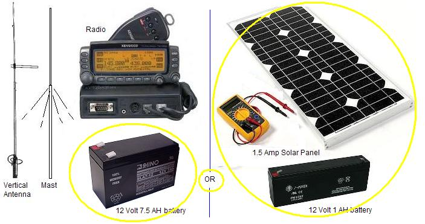

Join the Golden Packet Yahoo group above to stay informed of HAM Hikes and the Golden Packet events.
Hike Across Maryland 7 May 2011 This page provides technical information on the use of APRS and Ham Radio to support this annual hike along the Appalachian Trail. The techniques used here are being expanded for an APRS Ham Radio survey of the entire AT this spring (see page). Also, do not overlook our annual Golden Packet Event.
Using 144.39 +600 For High Reliability APRS Communications: It is very important to realize that the number one impact on the reliability of packets from handhelds is their collisions with all the other traffic on the APRS channel. This is easily avoided by using SPLIT digipeaters for the event. These digipeaters listen for the event participants on 144.99 which has no other packets on it. This gives these packets very high probabilities of being heard. Then these digis digipeat the packets over to the national 144.39 for distribution back to all participants and observers. The map below details the entire event area.
The 40 mile Appalachian Trail through Maryland (shown in red) has solid 144.39 coverage from the N3KTX-4 digipeater on mountains to the west of Haggarstown, and from the N3KTX-2 digipeater on the mountain in Fredrick as shown. But these two digipeters also hear solid packets from Northern Virginia, Washington DC, Baltimore and into Pennsylvania. With these high profile digis, the chance of hearing a hiker on the AT without collisions is small. Previous tests show about a 30% or less hit rate. This is for HT's that can basically SEE the digipeater antennas across the valley.
 Temporary SPlit Digis: For this event, Dick WN3R placed his home station (on the top of the Fredrick
Mountain to act as a 144.99 input and 144.39 output. This digi provided over 90% coverage of the entire event
because it was to the side of the Trail and could hit everywhere along the ridge. Another home station, K8WDX
down to the south west of Harpers Ferry also provided split digipeating to the complex valleys near
that area. A third excellent portable digi, K3TED was located high up on Lambs Knoll. Its range was
actually higher and wider coverage than shown here, but in most cases the WN3R digi won the output
collision competition into the existing 144.39 network and so most packets went that route.
Temporary SPlit Digis: For this event, Dick WN3R placed his home station (on the top of the Fredrick
Mountain to act as a 144.99 input and 144.39 output. This digi provided over 90% coverage of the entire event
because it was to the side of the Trail and could hit everywhere along the ridge. Another home station, K8WDX
down to the south west of Harpers Ferry also provided split digipeating to the complex valleys near
that area. A third excellent portable digi, K3TED was located high up on Lambs Knoll. Its range was
actually higher and wider coverage than shown here, but in most cases the WN3R digi won the output
collision competition into the existing 144.39 network and so most packets went that route.
Operating Split Comparison: Joe Durnal hiked the trail twice with his HT. The first time with the normal 144.39 with his succeses shown with blue dots to the right. He had outages as much as an hour long where he was not being heard. The second time (during this event) operating +600 his successes are plotted with red dots. As you can see to the right, his reliablity improved from about 30% to almost 100%. This is because the packets heard on the +600 offset digipeater inputs were only the 10 stations in the event, and not the 300+ stations on 144.39 in the area. That's a 30-to-1 reduction in collision interference. Excellent tracks were also made with the +600 offset transmissions by NE3R-7 and HIKER-1 , HIKER-2 and SWEEP2. The data for SWEEP2 does not appear as good and we suspect he was on 144.39 simplex, but the data was lost before we could look at it.
HIKER/RUNNER Number Tracking: Another thing we wanted to do was to demonstrate how APRS can easily be used to keep track of the positions of a hundred or so hikers/runners using nothing but APRS radios and without any need for APRS displays and client software. The concept was simply for any APRS station along the event to send a text message reporting a list of runner numbers past his point periodically. The message would contain a TIME STAMP and then a list of up to 10 runner numbers. No more than 10 should be in any one message because that is the size of the displays on the older, early model APRS radios. You can see the messages entered by HIKER-2 below: He was walking in the opposite direction to the event, so between two checkpoints, he was able to report on nearly 100 of the event's 125 runners.
NUMBERS FOR EVERYONE! Not only did the runner number messages above appear on the APRS-IS for anyone in the world to see, but these messages were also captured into every APRS radio, mobile and handheld at the event. If any APRS operator was asked about a given runner, he could just go back and look at the recent messages from the last checkpoint and look up WHEN that runner passed. Done. No need for central computers or data bases. APRS updatges everyone in real time, AND everyone's APRS radio captures it for later use. [The above example was the best message example because it was done by someone under 22 years old who has no fear of Texting on a key pad. This kid was moving. Normally these messages would be entered at the fixed stations, where the time of a passing runner makes more permanent sense.]
THIS IS THE ORIGINAL INTENT OF APRS! Notice that the only thing we "TRACKED" were the four ham SWEEP hikers.. . But more importantly, in addition, we were maintaining "tracking" information of all the 150 participants in the event using APRS messages. This was very effective since in each message packet, the location of up to 10 runners was provided to EVERYONE. This is what APRS is all about... A communications network, not just a bunch of blind trackers running about.
POSITION PACKET RATES: The standard APRS rate for fixed station Tactical Operations is once per 10 minutes. This gives good update latency while keeping background channel loading low. Every fixed station in the event should use this rate. Too many people overlook that APRS is a live network. Even the fixed stations need to beacon so that everyone else can see that they are still participants in the net and that they are still in contact.

DIGIPEATER HARDWARE: Portable digipeaters can consist of nothing more than a D700/D710, a mast as required to clear the trees, and a power source. The D700 draws about .6 amps on receive and the D710 about .7 amps, and about say 4.5 amps on TX (medium power 10W). Under normal operation, the duty cycle of an APRS digipeater is much less than 20% so the average power demand of the AT digipeater will be about .2 * 4.5A +.6A or about 1.5 Amps per hour. You can either carry a 7.5 Amp Hour battery to the mountain top, or if the day is sunny, a 1 Amp-Hr battery and a 1.5 amp solar panel as shown for a 5 hour event.
DIGI SETTINGS: Each special SPLIT digi is set up to listen on 144.99 and to transmit with a -600 KHz offset so that it transmits on 144.39. From there, it is picked up by the normal national APRS network. YOu might notice that these special SPLIT digipeaters do not have the ability to listen on 144.39 before transmitting there. This is OK, in fact, it is a benefit. It gives these packets brick-bat priority over all other packets in the area. This is the intent of a special event.
EVENT PACKET PATHS: All pparticipants in the event used the path of WIDE1-1,WIDE2-1. This let everyone's packets get into the first level WIDE1-1 SPLIT digipeaters without the wall-to-wall collisions normally on 144.39. From there on, their packets entered the 144.39 network with one more hop like any other packet, but with the advantage of the 50W level of the split-digi and with its nearness to the 144.39 digipeaters, these packets got priority over all other distant packets heard.
MESSAGE FORMATS: As shown above, a runner report was simply a TIME stamp followed by a list of runner numbers (up to 10). Any more than 10 will overrun the small displays of the original TH-D7 walkie talkies. We encouraged everyone to use leading zeros for the non-3 digit numbers so that all numbers were 3 digits long. This made it trivial to send the next runner report by just calling up an olde message and editing over the old ones with the new runner numbers.
Bob, WB4APR
See other APRS hiker pages about the Golden Packet Event in July and some other general APRS applications and Ideas on The AT
Return to The APRS HOMEPAGE or SiteMap.
{kind=link}
{kind=link}
{kind=link}
{kind=link}